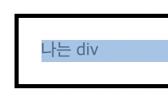
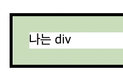
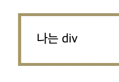
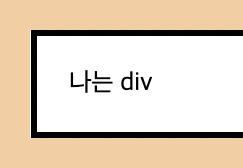

Content
실제 콘텐츠들이 들어가는 부분이다.
Padding
테두리와 콘텐츠 간의 여백이다.
Border
margin과 padding의 경계 부분이며 테두리라고 불린다.
Margin
요소와 요소간의 여백이다.
HTML5, CSS3, Javascript, Bootstrap, Web Design

부트스트랩(Bootstrap) 이란 프론트엔드 개발자들이 널리 사용하는 프레임워크입니다. 부트스트랩은 이미 만들어져있는 페이지 템플릿을 무료, 유료로 제공하고 있기 때문에 해당 템플릿을 받아 페이지를 디자인하면 아주 손쉽게 아름다운 서비스 페이지를 만들 수 있습니다.

Tailwind CSS는 사용자 정의 가능한 CSS 프레임워크로, HTML 요소에 빠르고 쉽게 스타일을 적용할 수 있도록 도와줍니다. 기존의 CSS 프레임워크와 달리 클래스 기반으로 스타일을 적용하며, 효율적인 작업 흐름과 재사용 가능한 컴포넌트를 제공합니다.
개발자 도구 창에서 박스모델 확인 가능
웹 브라우저에서 웹 문서 열기
박스모델 확인할 부분을 마우스 오른쪽 버튼으로 누른 뒤 [검사] 선택
개발자 도구 창 위에서 [Computed] 탭 클릭
해당 부분의 박스 모델이 그림으로 표시됨
실제 콘텐츠들이 들어가는 부분이다.
테두리와 콘텐츠 간의 여백이다.
margin과 padding의 경계 부분이며 테두리라고 불린다.
요소와 요소간의 여백이다.